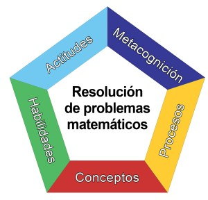

Cursos y Programas de Capacitación – 2019
Enseñando matemática con el Método Singapur Educación Parvularia y Básica
¿Qué es el Método Singapur para la enseñanza de las Matemáticas?
El Método Singapur, propone el desarrollo de conceptos, habilidades, procesos matemáticos, competencias de metacognición, y actitudes necesarias para el aprendizaje de las matemáticas. Sus principios buscan la construcción de un programa eficaz de enseñanza y aprendizaje de las matemáticas y establece la dirección a seguir para alcanzar dicho objetivo.
El Método Singapur está centrado en la resolución de problemas en contextos significativos, a través de una metodología de acercamiento que va evolucionando desde el uso de material concreto a la representación pictórica del problema y, posteriormente, al uso de símbolos y un lenguaje más abstracto. A partir de este proceso, se espera que los estudiantes reconozcan la relación entre los datos y la incógnita y su relación en el problema, para lograr una mejor comprensión del mismo.
La propuesta está estructurada con criterios didácticos que relacionan las nociones matemáticas, promueven la apropiación de un lenguaje matemático y utilizan recursos como medios para el aprendizaje. Los contenidos matemáticos que los estudiantes necesitan aprender en cada nivel, se van desarrollando gradual y sistemáticamente para consolidarlos, articularlos y ampliarlos progresivamente, a través de las distintas etapas de aprendizaje, con un enfoque de aproximación en espiral, hasta lograr una construcción robusta del conocimiento. De este modo, los estudiantes son provistos de las experiencias de aprendizaje necesarias, y en su debido tiempo, para el logro de los objetivos de aprendizaje en cada nivel.
¿Cómo puedo saber más y capacitarme en el Método Singapur?
El Centro Félix Klein de la Universidad de Santiago de Chile, adaptó curricular, cultural y didácticamente los textos de Singapur, llamándolos “Pensar sin Límites: Matemática Método Singapur” y desde el año 2009 viene dictando y elaborando cursos y programas de capacitación en torno al Método Singapur desde Educación Parvularia a 8º básico para todos aquellos establecimientos educativos y docentes que están interesados en incorporar a su proyecto educativo el Método Singapur.
Los cursos que ofrecemos son:
- Enseñando matemática en Educación Parvularia con el Método Singapur.
- Enseñando matemática en 1° básico con el Método Singapur.
- Enseñando matemática en 2° básico con el Método Singapur.
- Enseñando matemática en 3° básico con el Método Singapur.
- Enseñando matemática en 4° básico con el Método Singapur.
- Enseñando matemática en 5° básico con el Método Singapur.
- Enseñando matemática en 6° básico con el Método Singapur.
- Continuidad en la enseñanza de las matemáticas en 7° y 8° básico con el Método Singapur.
Las clases son presenciales, centradas en una metodología interactiva que propicia el aprendizaje significativo en los participantes, combinando el trabajo con el texto “Pensar sin límites: matemática Método Singapur” y la entrega de contenidos teóricos con aplicaciones prácticas por parte de los participantes, tanto a nivel individual como grupal. Además, se utilizarán diversos materiales didácticos concretos, quedando algunos de ellos en poder de los participantes.
En total son 11 sesiones (a excepción de 7° y 8° básico, que cuentan con 9 sesiones), distribuidas a lo largo del año, los días sábados de 9:00 a 14:00 horas en las dependencias de la Universidad de Santiago de Chile.
Si desea mayor información respecto a un curso o desea inscribirse, por favor complete el siguiente formulario de contacto: